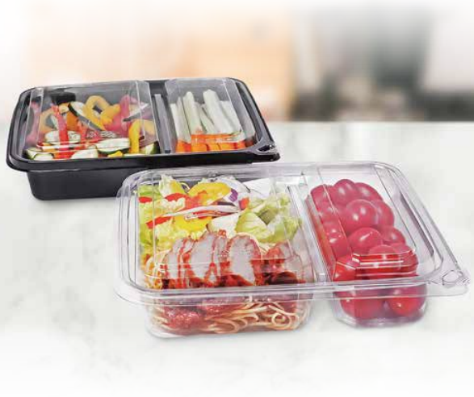

The Rise of Micro-Markets and Grab & Go Packaging

Unattended retail, or Micro-Markets, is the fastest-growing segment in food service. By 2027, the market is expected to surpass 100,000 active locations in North America. These self-checkout convenience hubs in offices, airports, and residential complexes rely on one thing more than any other: Packaging that sells itself.
1. The Visual "Buy Signal"
In a micro-market, there are no service staff to describe the food. The container is the salesperson. High-clarity PET allows the freshness of the ingredients to be the hero, while premium hexagonal or square bowl shapes differentiate the product from traditional "cafeteria" round bowls. If it doesn't look premium, it won't sell at the higher micro-market price point.
2. Security in Every Snap
Tamper evidence is non-negotiable in unattended settings. Our But-N-Loc technology was specifically designed for this application. It gives the consumer visible and audible proof that their food hasn't been opened, eliminating the need for expensive shrink bands or messy adhesive labels that obscure the product.
3. Portability and "Eat-In-Container" Design
Micro-market customers are almost always on the move. Packaging must be rigid enough to eat out of at a desk or in a vehicle. Stackability is also key for the operator—compact nesting allows for more variety in limited shelf space, while secure-stack lids prevent "refrigerator avalanches" that lead to damaged goods.
4. Sustainability Branding
The demographic frequenting micro-markets—predominantly Gen Z and Millennial professionals—is highly sensitive to single-use plastics. Incorporating verified post-consumer recycled content (rPET) gives operators a compelling sustainability narrative that aligns with the corporate ESG goals of the locations they serve.